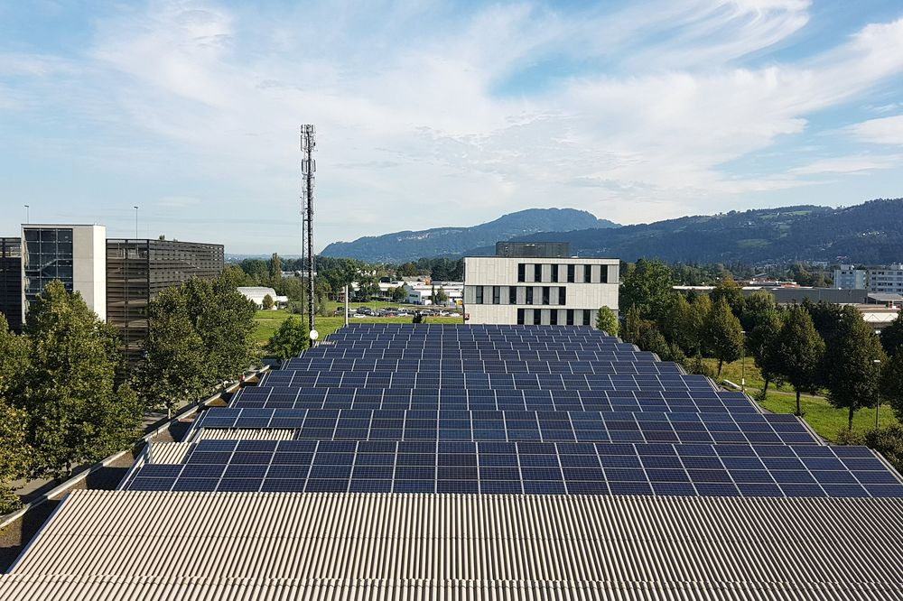

01
Commercial & Industrial
Reduce energy costs, improve reliability and support uninterrupted operations.
Manufacturing lines, cold chains and process plants pay for two things: the energy they use and the peak they draw. A system sized against your own interval data shaves that peak, carries short grid interruptions and lets you buy energy at the cheaper end of the tariff.
In most cases the cabinet sits behind the main switchboard and needs nothing more than a prepared plinth, a cable route and a metering point to work from.
- Lower demand charges by discharging into measured peaks
- Ride through short grid dips without dropping a production batch
- Shift consumption into off-peak and captive generation windows
- Defer a sanctioned-load upgrade when adding new equipment
Typical applicationsManufacturing plants, cold storage, textile and process industry, logistics hubs, hospitals
Size a system for your site